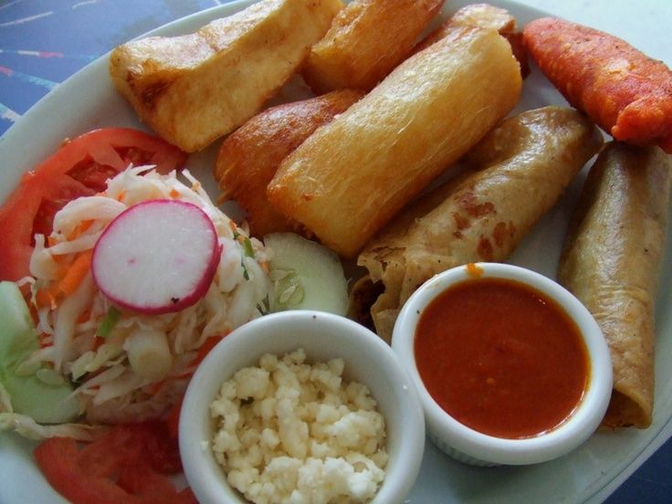

Yuca
La yuca salvadoreña es un cultivo tradicional y un alimento esencial en la dieta de muchas comunidades del país. Este tubérculo, conocido por su sabor suave y su textura versátil, se ha cultivado en El Salvador desde tiempos precolombinos y continúa siendo una fuente importante de nutrición y sustento económico para agricultores de subsistencia. Su capacidad para crecer en suelos pobres y su resistencia a la sequía la hacen ideal para las condiciones climáticas del territorio salvadoreño.
Ingredientes
- 1 kg de yuca (fresca o congelada, pelada y cortada en trozos)
- Agua (suficiente para hervir la yuca)
- Sal al gusto
- Aceite vegetal para freír
- Curtido salvadoreño (repollo, zanahoria y cebolla en vinagre)
- Salsa de tomate casera
Preparación
Preparar la yuca:
- Remover su capa y córtala en trozos medianos, (retirando la vena central).
- Lava muy bien los trozos de yuca.
Hervir la yuca:
- colocandola en una olla grande donde se pueda cubrir por completo.
- Agrega sal al gusto.
- Cocina a fuego medio por 25 a 35 minutos, o hasta que esté suave.
- Dejar que se enfríe si aplicarle agua fría.
Freír la yuca:
- calienta suficiente aceite en una sartén profunda.
- Fríe los trozos de yuca hasta que estén dorados.
- Retíralos y colócalos sobe papel, absorbente para eliminar el exceso de aceite.
Prepación del curtido:
- Raya muy bien el repollo y ponlo en agua caliente, dejandolo hervir 3 minutos.
- coloca zanahoria.
- Agrega sal y pimienta.
- Opcionalmente puedes aplicar vinagre al curtido.
Preparación de salsa:
- Licúa tomate, cebolla, chile, y agrega sal.
- Despues de licuar pones a hervir la salsa con fuego medio.
Imágenes
